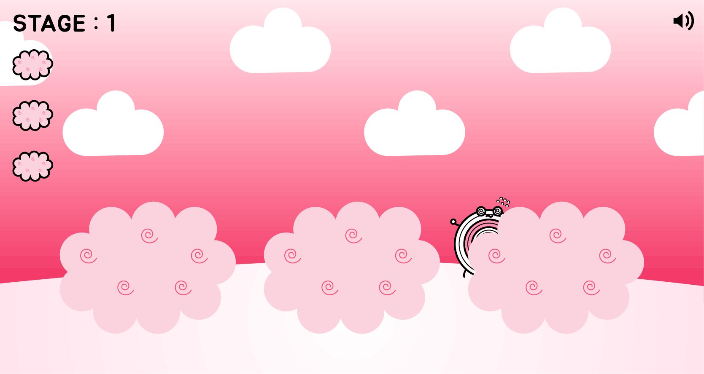

<idoctype html>
<head>
<meta charset = "utf-8">
<link href='normalize.css' rel="stylesheet">
<link href='https://spoqa.github.io/spoqa-han-sans/css/SpoqaHanSans-kr.css' rel='stylesheet' type='text/css'>	  
</head>
<header>
	숨은 다트 찾기
</header>
<style>
	header{font-weight:300;font-size:40px;text-align:center;margin-top:80px;margin-bottom: -120px;}
	body{margin: 0 auto;width:100%;}
	footer{text-align:center;font-weight: 100;color:black;font-size:12px;margin-top: 40px;}
</style>

<body>


<a href="./3.html">
 
 </a>
</body>
<footer>
	HKNU design / Digital publishing / Lee juhyeon
</footer>